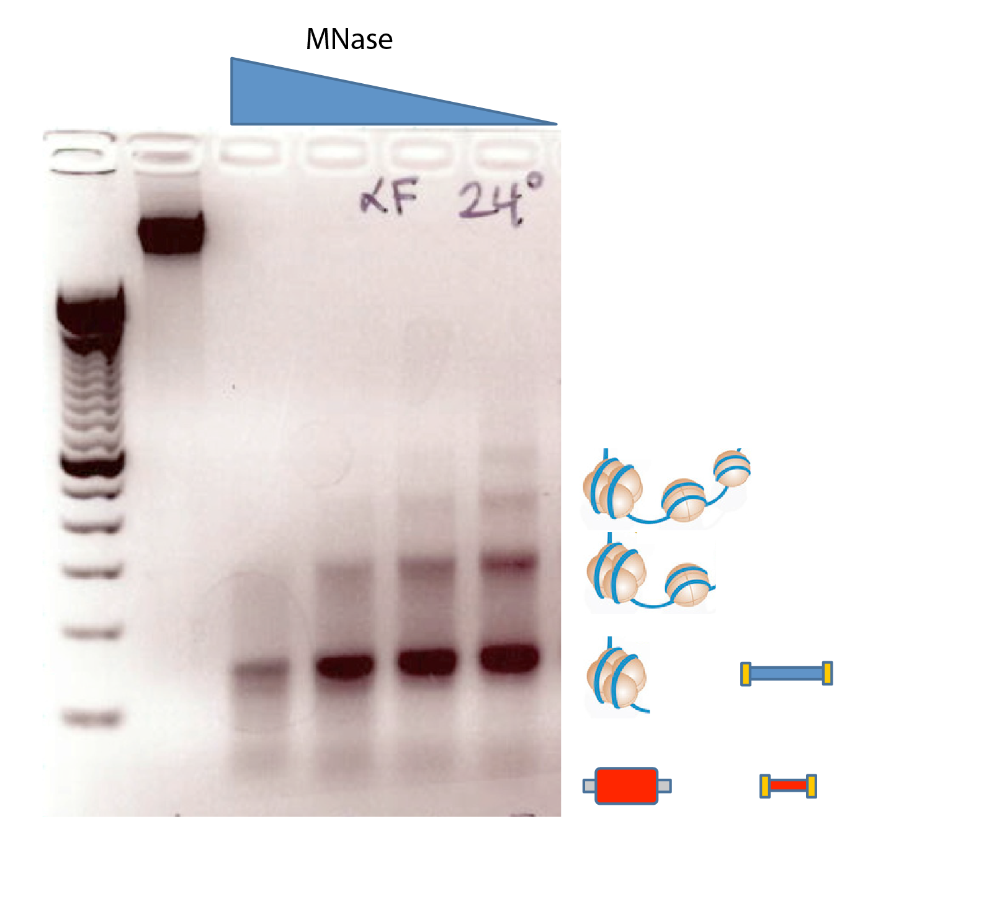

Disruption and repair of chromatin at a double strand break
Department of Pharmacology and Cancer Biology
Duke University School of Medicine
BSC ASBMB 2019
Chromatin remodeling at replication origins

Belsky et al., Genes & Development, 2015
Jason's footprint
Jason Belsky
MNase 'footprinting' the genome

Belsky et al., Genes & Development, 2015
MNase 'footprinting' the genome

Belsky et al., Genes & Development, 2015
MNase 'footprinting' the genome
Chromatin occupancy at nucleotide resolution

Chromatin occupancy at nucleotide resolution

Chromatin regulation of CIK1

No mating pheromone
Chromatin regulation of CIK1

Mating pheromone
Mónica's assembly

Mónica Gutiérrez
NCOP - nascent chromatin occupancy profiling
Chromatin assembly at the replication fork
Gutiérrez et al., Genome Research, 2019
Vinay's DSB


Vinay Tripuraneni
Vinay's DSB

Vinay Tripuraneni
DSB in the context of chromatin

Hauer and Gasser, Genes & Development, 2017
Broad nucleosome eviction surrounding a DSB

Tsukuda et al., Nature 2005
Introduction of a site-specific break at PHO5
Introduction of a site-specific break at PHO5

Introduction of a site-specific break at PHO5
MRX-dependent broad eviction of nucleosomes
Chromatin occupancy profiling

Chromatin changes at control loci

Chromatin flanking a DSB break at PHO5

Chromatin flanking a DSB break at PHO5

Chromatin flanking a DSB break at PHO5

Histone eviction surrounding a break at PHO5

Histone eviction surrounding a break at PHO5

Histone eviction surrounding a break at PHO5

Histone eviction summary
Histone eviction summary
MRE11 facilitates eviction of the 1L nucleosome
Restoration of chromatin following NHEJ?

Restoration of chromatin following NHEJ?

Chromatin dynamics during NHEJ

Chromatin dynamics during NHEJ

Replication independent restoration of chromatin following NHEJ

Acknowledgements
| MacAlpine Lab | Collaborators |
|---|---|
| Mónica Gutiérrez | Jim Haber (Brandeis) |
| Heather MacAlpine | |
| Yulong Li | |
| Vinay Tripuraneni | |
| Rachel Hoffman | |
| Bonnie Chen | Funding |
| NIH/NIGMS |